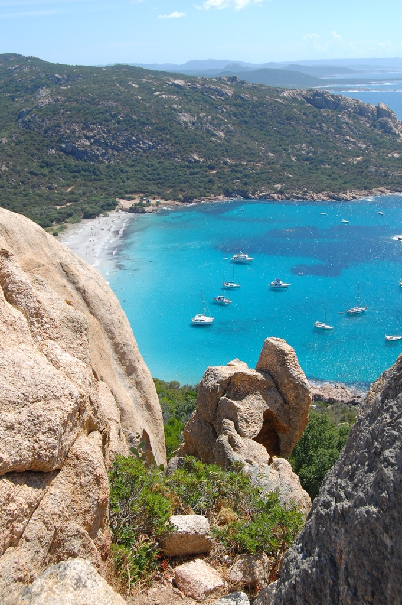
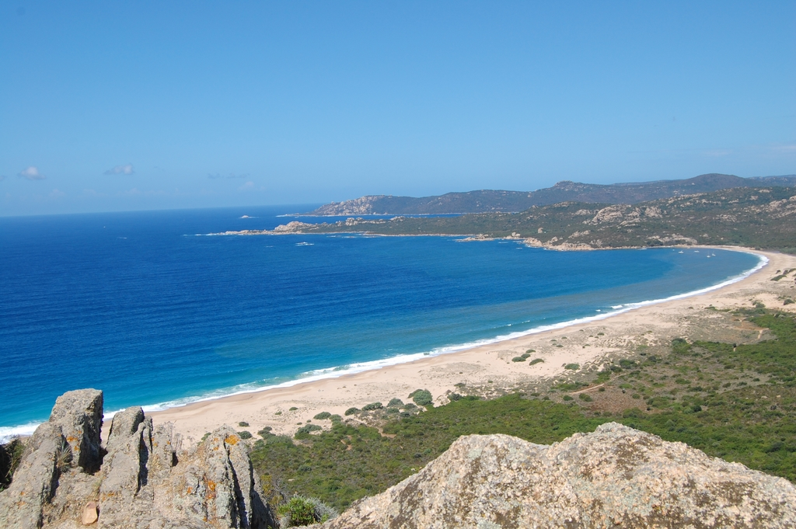
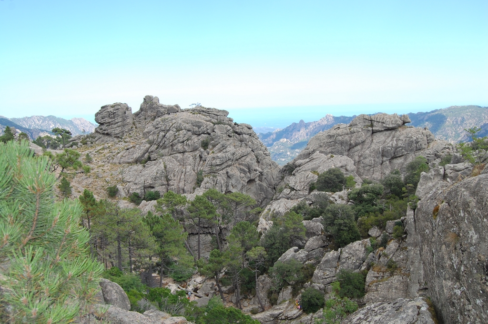
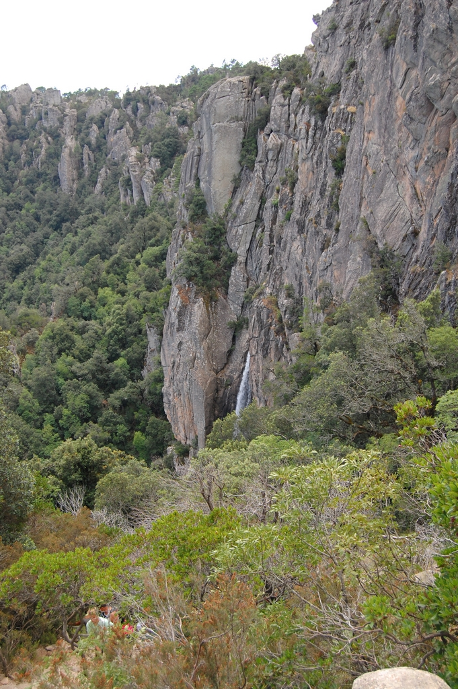
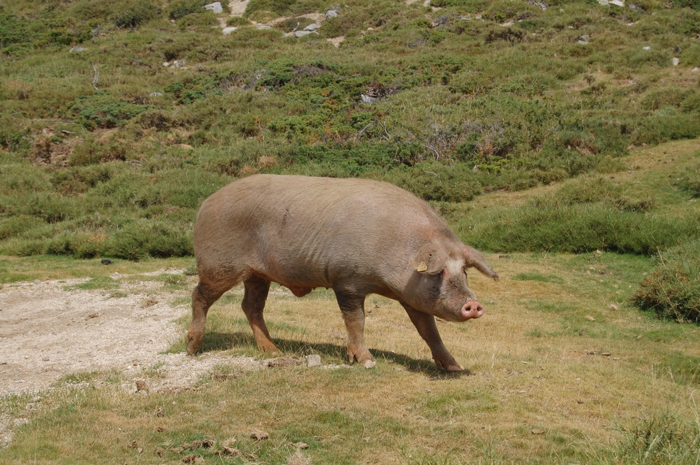
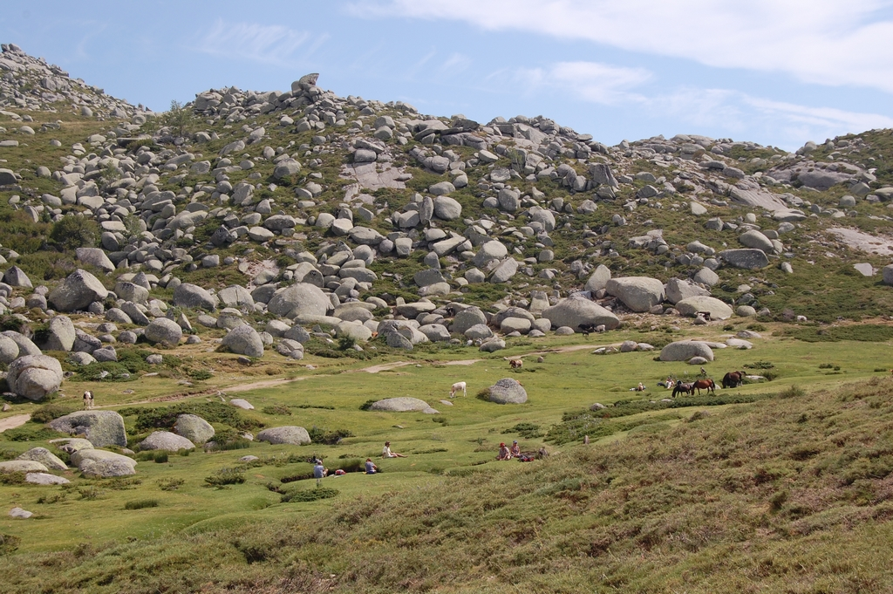
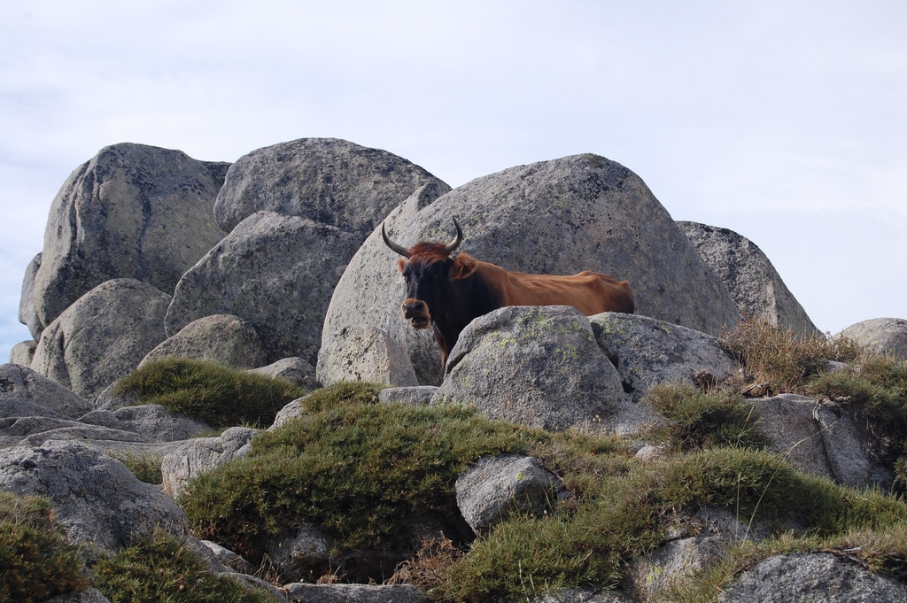

Corse - 2013
Voyage en 2013 en corse du Sud, on visitera la Corse à l'ouest et du Nord, quelques années plus tard...Plage de Roccapina

Une des plus célèbres plages de Corse du sud, la plage de Roccapina est restée une pure merveille. Plage de sable blanc, eau turquoise, le décor est planté pour cette plage proche de Bonifacio.

On part donc en randonnée depuis Sartène, pour faire le tour du Lion de Roccapina, entre les plages de Roccapina et Erbaju. Le panorama et la vue sont superbes et les plages idéales pour se détendre...
Cascade de Piscia Di Gallu

La cascade de Piscia Di Gallu au coeur du massif de l’Ospedale est l'une des plus grandes cascades de Corse culminant à plus de 60 m. Il faut compter une petite heure de marche à travers une crête rocailleuse et une forêt de pins pour l'apercevoir. La baignade est interdite ici, il faudra attendre de retourner sur Porto-Vecchio.

Plateau de Coscione

Le plateau de Coscione est un lieu touristique situé dans les montagnes corses. Le paysage est verdoyant. On y trouve de nombreux cours d'eau et de nombreux animaux en liberté : cochons, vaches et chevaux.

Deux heures de marches pour une randonnée assez facile, le terrain étant peu accidenté, ce qui est assez rare dans les montagnnes corses.
